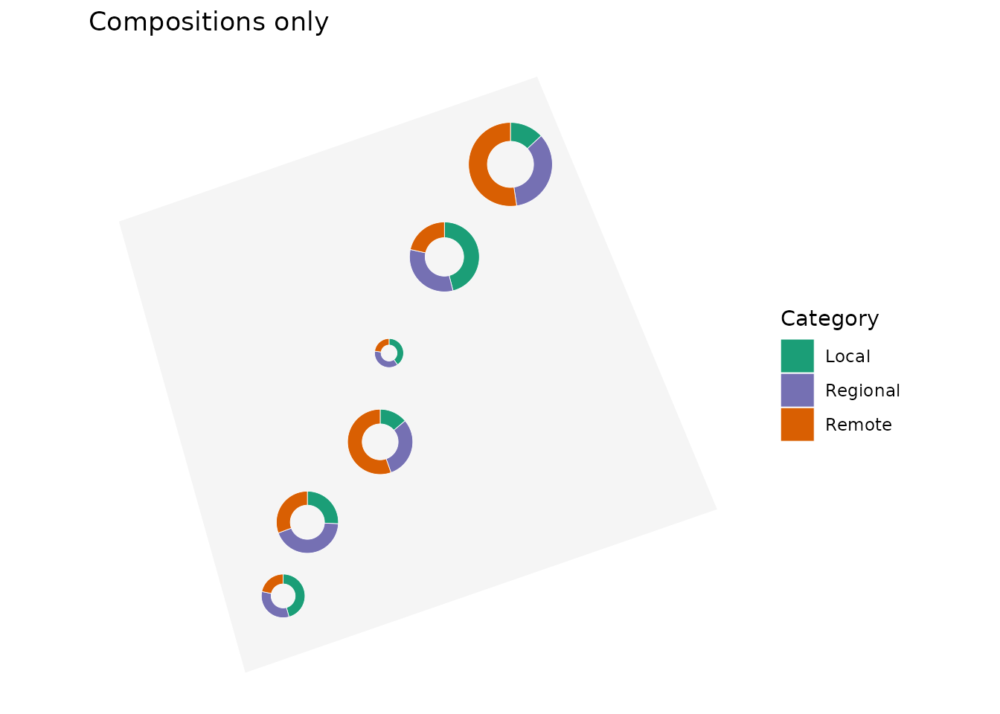
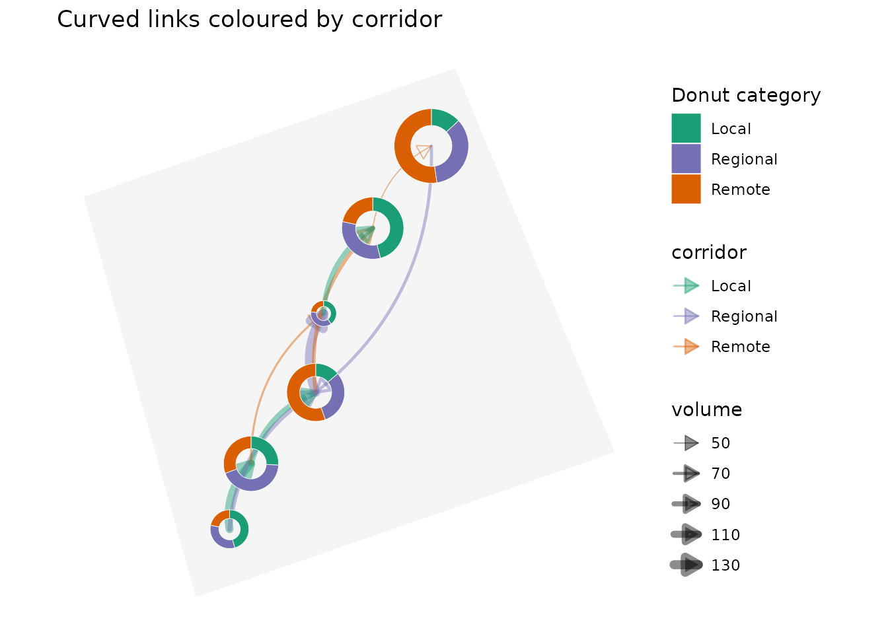
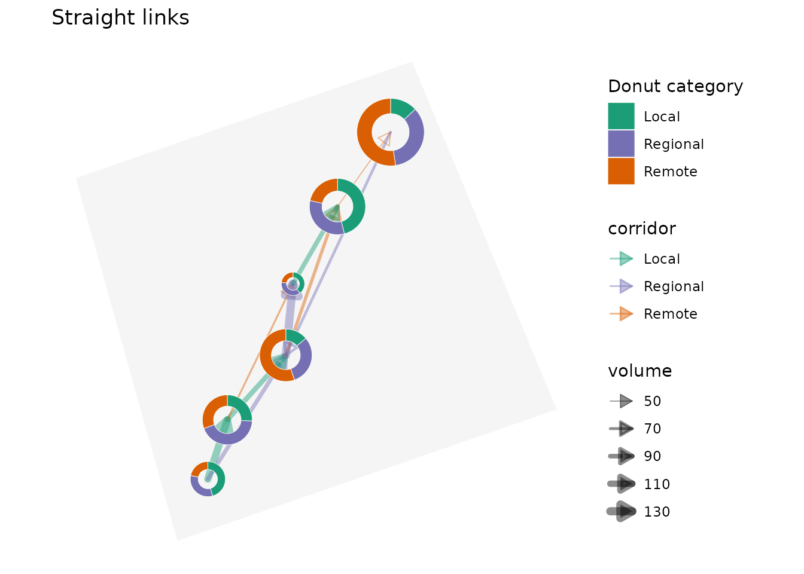
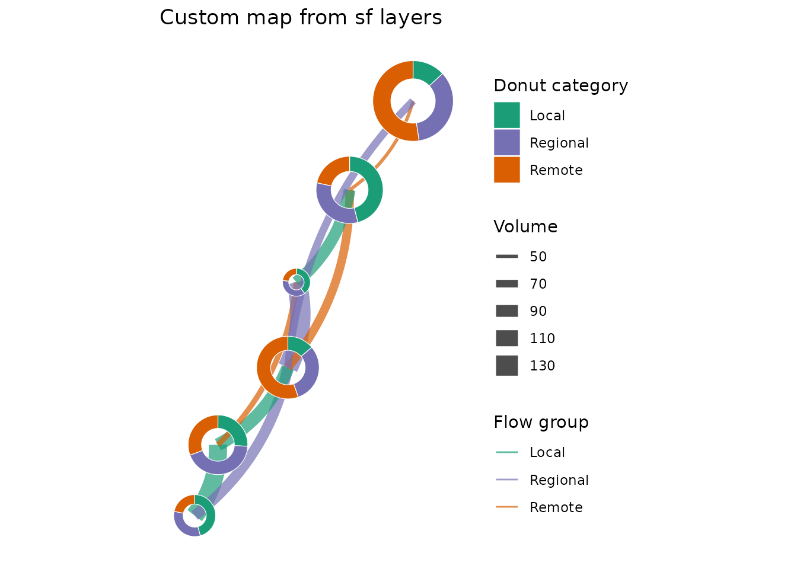

This gallery shows several ways to use DonutMap. All locations, category values, and links are simulated for demonstration. They are not observed data.
library(DonutMap)
library(ggplot2)
library(sf)
#> Linking to GEOS 3.12.1, GDAL 3.8.4, PROJ 9.4.0; sf_use_s2() is TRUEShared data
The examples use a small synthetic network of locations in eastern
Canada. The background layer is a simple sf polygon created
inside the vignette, so the gallery does not depend on an external map
download.
locations <- data.frame(
place = c("Hub A", "Hub B", "Hub C", "Hub D", "Hub E", "Hub F"),
lon = c(-73.6, -72.9, -71.4, -70.8, -69.4, -67.8),
lat = c(45.5, 46.2, 46.8, 47.7, 48.5, 49.2)
)
categories <- c("Local", "Regional", "Remote")
donut_data <- merge(
locations,
data.frame(category = categories),
by = NULL
)
donut_data$value <- c(
42, 32, 18,
28, 64, 22,
30, 54, 40,
26, 45, 58,
20, 38, 72,
16, 30, 88
)
donut_data$category <- factor(donut_data$category, levels = categories)
flows <- data.frame(
from = c(
"Hub A", "Hub A", "Hub B", "Hub B", "Hub C",
"Hub C", "Hub D", "Hub E", "Hub F"
),
to = c(
"Hub B", "Hub C", "Hub C", "Hub D", "Hub D",
"Hub E", "Hub E", "Hub F", "Hub C"
),
volume = c(120, 85, 95, 60, 130, 75, 90, 50, 70),
corridor = c(
"Local", "Regional", "Local", "Remote", "Regional",
"Remote", "Local", "Remote", "Regional"
)
)
category_colours <- c(
Local = "#1b9e77",
Regional = "#7570b3",
Remote = "#d95f02"
)
background <- sf::st_as_sfc(
sf::st_bbox(
c(xmin = -74.5, ymin = 44.8, xmax = -66.8, ymax = 50.0),
crs = sf::st_crs(4326)
)
)
study_area <- sf::st_sf(
area = "Simulated study area",
geometry = background
)1. Static donuts without links
Use donut_map() without flows when the goal
is to compare compositions at locations.
donut_map(
donut_data,
place,
category,
value,
lon = lon,
lat = lat,
map = study_area,
crs = 3347,
radius_range = c(18000, 52000),
colours = category_colours
) +
labs(
title = "Compositions only",
fill = "Category"
) +
theme(legend.position = "right")
2. Static map with curved coloured links
Supplying flows, from, to, and
flow_value draws links between donuts. The
flow_group and flow_colours arguments colour
the links and arrows by a categorical flow variable.
donut_map(
donut_data,
place,
category,
value,
lon = lon,
lat = lat,
map = study_area,
crs = 3347,
radius_range = c(18000, 52000),
colours = category_colours,
flows = flows,
from = from,
to = to,
flow_value = volume,
flow_group = corridor,
flow_colours = category_colours,
flow_curvature = 0.25,
flow_linewidth_range = c(0.3, 2.4),
flow_arrow = TRUE
) +
labs(
title = "Curved links coloured by corridor",
fill = "Donut category",
linewidth = "Volume"
) +
theme(legend.position = "right")
3. Straight links
Use flow_curvature = 0 for direct straight links. This
is often useful for small networks where curved trajectories would add
visual clutter.
donut_map(
donut_data,
place,
category,
value,
lon = lon,
lat = lat,
map = study_area,
crs = 3347,
radius_range = c(18000, 52000),
colours = category_colours,
flows = flows,
from = from,
to = to,
flow_value = volume,
flow_group = corridor,
flow_colours = category_colours,
flow_curvature = 0,
flow_linewidth_range = c(0.3, 2.4),
flow_arrow = TRUE
) +
labs(
title = "Straight links",
fill = "Donut category",
linewidth = "Volume"
) +
theme(legend.position = "right")
4. Interactive map with filtered links
donut_leaflet() creates a clickable leaflet
widget. The flow_min argument keeps only larger flows,
which can make dense networks easier to read.
donut_leaflet(
donut_data,
place,
category,
value,
lon = lon,
lat = lat,
map = study_area,
radius_range = c(18000, 52000),
colours = category_colours,
flows = flows,
from = from,
to = to,
flow_value = volume,
flow_group = corridor,
flow_colours = category_colours,
flow_min = 80,
flow_weight_range = c(1, 7),
flow_curvature = 0.25,
flow_arrow = TRUE,
flow_arrow_size = 35000,
flow_opacity = 0.8
)5. Geometry-first workflow
For more customized maps, compute the sf layers first
and then plot or transform them yourself.
donut_layer <- donut_polygons(
donut_data,
place,
category,
value,
lon = lon,
lat = lat,
crs = 3347,
radius_range = c(18000, 52000)
)
flow_layer <- flow_lines(
flows,
donut_data,
from,
to,
volume,
place,
group = corridor,
lon = lon,
lat = lat,
crs = 3347,
flow_curvature = -0.18,
flow_n = 50
)
ggplot() +
geom_sf(
data = flow_layer,
aes(linewidth = value, colour = group),
alpha = 0.7
) +
geom_sf(data = donut_layer, aes(fill = category), colour = "white") +
scale_colour_manual(values = category_colours) +
scale_fill_manual(values = category_colours) +
coord_sf(datum = NA) +
labs(
title = "Custom map from sf layers",
colour = "Flow group",
fill = "Donut category",
linewidth = "Volume"
) +
theme_minimal()